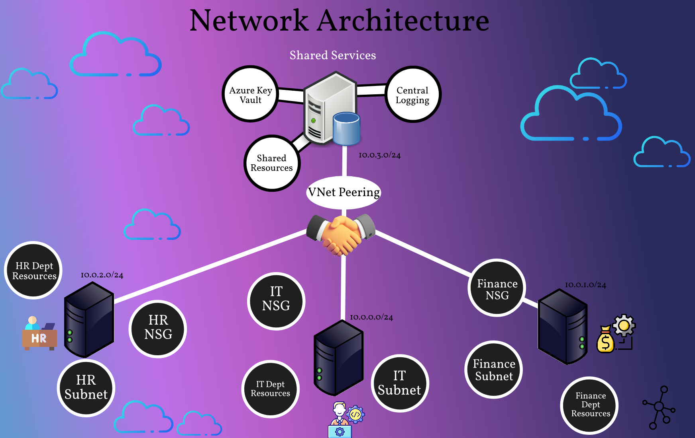

View Code Implementation
Click each box to view the code
Cybersecurity Analyst | PenTester | IT Professional
I completed a cloud automation project in Microsoft Azure where I built an entire IT environment using scripts instead of manual setup. This approach ensures that a company can create secure systems quickly, consistently, and with fewer errors. The design included a protected network and a virtual computer that employees can safely access without exposing the system to outside threats. By automating the process, businesses save time, reduce operational costs, and can easily duplicate or scale the environment as they grow. This type of setup is commonly used by organizations to support remote work, securely host internal applications, and ensure they can recover systems faster in the event of outages or changes in business needs.

Unlisted video hosted securely — viewable only on this page.
Cloud platform used to deploy secure, scalable, and compliant enterprise workloads.
Defines secure private cloud networking boundaries for workloads and services.
Controls east-west traffic through segmentation and rule-based security.
Provides secure remote access with no public RDP or SSH exposed to the internet.
Automates deployment of cloud environments using declarative templates.
Ensures new infrastructure is deployed consistently and securely at scale.
Aligns networking with Zero Trust principles to protect business systems.
Least-privilege access modeled around Zero Trust segmentation.
Identity-driven access enforcement with continuous validation.
Break-glass access only. No public RDP or SSH endpoints.
Defense-in-depth filtering and traffic isolation using Azure policy.
No internet-facing components; private endpoints only.
Reusable IaC deployments ensure consistent cloud environments.
Automated state enforcement and continuous compliance.
Azure policy and budget guardrails limit over-provisioning.
Clear visuals to support stakeholder understanding and adoption.
Click each box to view the code
These screenshots highlight deployed resources in Azure used for the secure network architecture.
Logical grouping of resources for lifecycle, policy, and cost control.
Controls allowed inbound/outbound network traffic for subnets.
Private cloud network enabling secure workload communication.
Challenge:
Terraform couldn’t find the Azure subscription and displayed:
subscription ID could not be determined
Why it happened:
Azure CLI wasn’t fully authenticated in Cloud Shell for Terraform’s API calls.
Fix:
Logged in again with correct authentication scope:
az login --use-device-code
Destroy deployed resources using terraform destroy to prevent Azure billing once validation is complete.